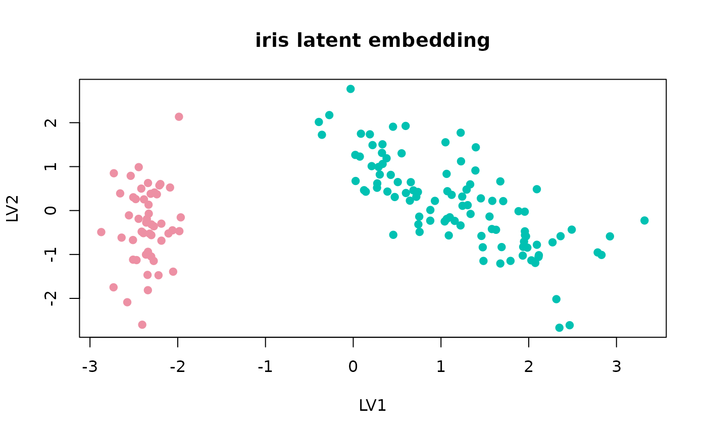
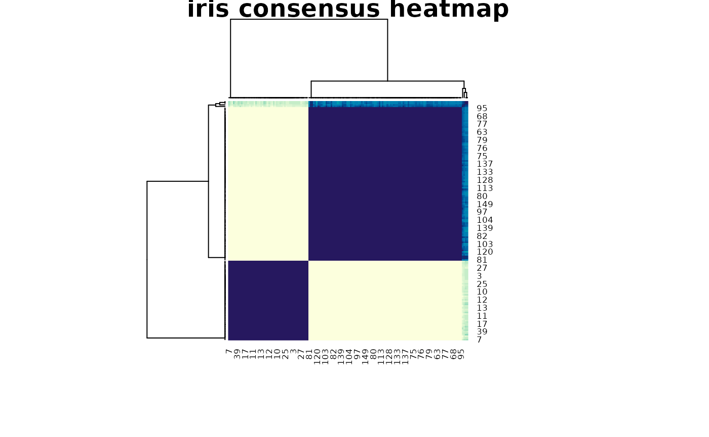

Tutorial
fit <- fit_uccdf(iris, candidate_k = 2:4, n_resamples = 20, seed = 7)
select_k(fit)
#> k stability
#> 1 2 0.9618709
#> 2 3 0.8493877
#> 3 4 0.7782389
head(augment(fit))
#> row_id cluster confidence ambiguity
#> 1 1 1 1 4.586135e-10
#> 2 2 1 1 4.292094e-10
#> 3 3 1 1 3.401017e-10
#> 4 4 1 1 3.614224e-10
#> 5 5 1 1 5.003852e-10
#> 6 6 1 1 4.632703e-10
plot_embedding(fit, main = "iris latent embedding")
plot_consensus_heatmap(fit, main = "iris consensus heatmap")